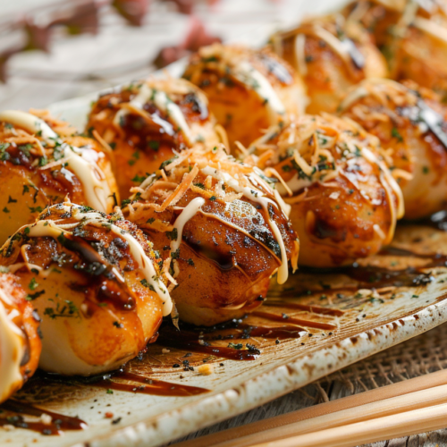

Home
Takoyaki

Description
**Takoyaki** is a popular Japanese street food made of small, round balls
of savory batter filled with diced octopus (**tako**), green onions, and
pickled ginger. Cooked in a special takoyaki pan with half-sphere molds,
the balls are crisp on the outside and soft and gooey on the inside. Once
cooked, they are typically topped with takoyaki sauce (similar to
Worcestershire sauce), Japanese mayonnaise, bonito flakes (dried fish
shavings), and aonori (seaweed flakes). Takoyaki is especially popular at
festivals and night markets, loved for its rich umami flavor and
satisfying texture.
Ingredients
- Eggs
- Flour
- Dashi powder
- Soy sauce
- Octopus
- Green onions
- Tenkasu
- Takoyaki sauce
- Kewpie mayo
- Bonito flakes
- Seaweed
Steps
-
Mix the batter up with a whisk making sure there are no floury bits.
-
Prep all of the fillings. Cut up the octopus, slice the green onions and
make sure you have everything at the ready: a little dish of oil, all
your ingredients, some skewers to flip the balls, and a plate to serve
on. Heat up the pan.
-
Generously oil the pan with a brush or a paper towel dipped in oil. Give
the batter a whisk then pour into the individual compartments all the
way up to the top. It’s okay if they overflow a bit. Add in the fillings
and let cook until the edges start to look more solid and opaque.
-
Use your skewers to turn the takoyaki 90 degrees. If they don’t easily
move, they need more time to crisp up. Once they’re at a 90° angle, pour
in a bit more batter to ensure a super round ball. Let cook, stuffing in
any excess batter that’s outside the ball, then turn again. You should
have a round ball. Cook until the balls are crispy and brown, moving the
balls around from mold to mold to evenly cook (this is because most pans
will have uneven heating). As the balls crisp up, it will be easier to
flip them.
-
When the balls are golden and crisp, pop them on a plate and brush with
takoyaki sauce and squeeze on some mayo.